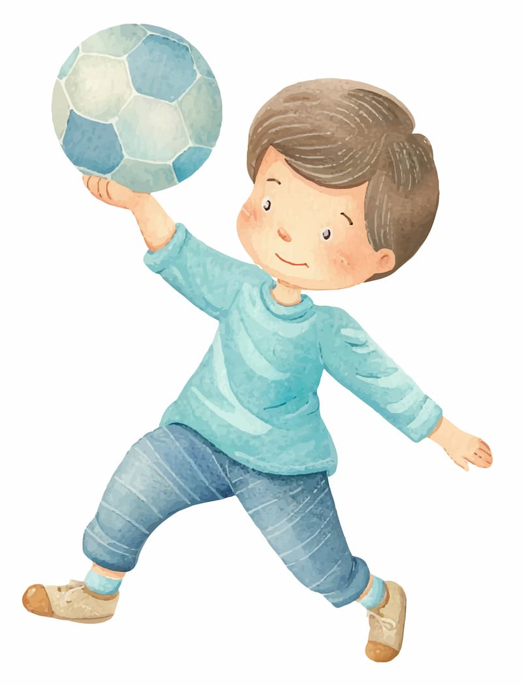
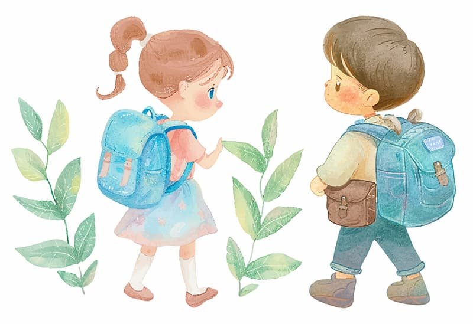
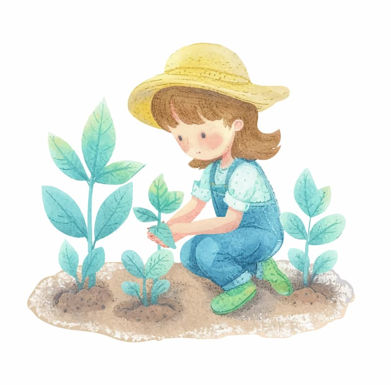

Партнеры картинка и 6 кубиков

Детям с 2-3 лет становится тесно в стенах дома с одними и теми же взрослыми и они нуждаются в новых пространствах и главное - в новых знакомствах, друзьях и соратниках
Мы используем лучшие подходы и методики дошкольного образования, Reggio педагогику, anji play, игровые методики европейских школ дошкольного образования
Добрая дача - это сообщество родителей и мастеров своего дела, которым важно создать атмосферу, где дети могут играть и расти вместе с другими в комфортной, домашней дружелюбной обстановке
Мир быстро меняется. Педагогика, основаная на послушании, на вбивании устаревших знаний делает детей смирными и послушными, безинициативными, готовыми исполнять чужие распоряжения Гораздо важнее становятся другие качества:
Но для этого важно, чтобы ребенок прожил
полноценное детство:в играх с друзьями,
в занятиях и увлечениях по его выбору,
следуя собственному ритму и интенциям
В нашем пространстве мы создаем все условия
полноценной жизни детей с бережной
поддержкой взрослых
Свободные дети вырастают уверенными в себе и успешными
Всегда доступен Коворкинг с кофе, вкусным чаем и вкусняшками для родителей
Вы можете выбрать расписание, которое лучше всего подойдёт Вашей семье
Cадик находится на закрытой охраняемой территории коттеджного поселка
Много гуляем на свежем воздухе на нашей территории и в лесу
15-20 минут от севера
Москвы и от Мытищ
Нам очень важно чтобы каждый ребенок принимал добрую дачу как свое пространство: легко включался в игры и веселые компании а расставание с родителями проходило легко
Стоимость садика варьируется в зависимости от графика посещений и составляет до 95 000 рублей за полный день при оплате за 1 месяц. Если вы оплачиваете 4, 6 месяцев или учебный год (10 месяцев), стоимость ниже. Есть также скидки для семей с 2 и более детьми. Пожалуйста, свяжитесь с нами, чтобы получить полную и актуальную информацию о тарифах.
В Садике-Шарике всего 20 мест, поэтому группы здесь – условное понятие. В нашем разновозрастном детском коллективе формируются небольшие компании. Иногда это старшие и младшие, иногда – команды для игр, но чаще дети делятся по интересам и потребностям. Например, те, кто днём спит и те, кто не спит, или те, кто хочет продолжать играть и те, кто хочет спокойно посидеть и послушать сказку. Обычно в садике ежедневно бывает по 10-15 детей.
Наша методика взаимодействия с детьми сочетает элементы личностно-ориентированного и средового
подходов к образованию и основывается на таких направлениях современной педагогики и психологии как:
реджио-подход; теория привязанности; игровые методики Егора Бахоцкого и Anji play; отдельные
элементы вальдорфской педагогики, педагогики Монтессори и Орф-педагогики.
Мы опираемся в своей работе на новейшие разработки ведущих исследовательских учреждений в области
развития ребёнка, таких как Институт Ньюфельда; Национальный Институт Игры; Центр родительства
Йельского университета; Центр развития ребёнка Гарвардского университета; Центр исследований
современного детства ВШЭ; Международный Центр в области инициатив детского развития; Институт
изучения детства, семьи и воспитания РАО.
Педагоги в Садике-Шарике организуют жизнь таким образом, чтобы ребёнок имел возможность личного
выбора по большинству вопросов, в рамках общего ритма дня. Мы не заставляем есть, спать, участвовать
в общих активностях, учить стихи или выступать на утренниках. Дети едят, потому что за компанию
всегда вкуснее, спят днём, потому что устали (или не спят, если не устали), играют вместе, потому
что так веселее. Каждый ребёнок имеет право на собственное видение своей деятельности и на
инициативу в том, чем он занимается. Немногие детские обязанности (например, мыть руки, убирать
игрушки, следить за своей одеждой) мы встроили в ритм дня: они воспринимаются как часть жизни, и
дети с готовностью им следуют.
В атмосфере свободы, уважения, принятия и доверия мы создаем условия для развития индивидуальных
способностей ребёнка, помогаем ему сформировать универсальные личностные навыки, а также выработать
и развить те способы взаимодействия с собой и с окружающим миром, которые позволят ему максимально
реализовать себя.
Садик – это в первую очередь способ разнообразить социальную среду в которой растет ребенок, дать
ему дополнительные возможности для развития. Чем разнообразнее среда, окружающая ребенка, тем лучше
развивается социальная гибкость, эмоциональный интеллект, навыки коммуникации и кооперации.
Если у ребенка нет нескольких близких по возрасту братьев и сестёр, или он не может стать частью
спонтанно сложившейся разновозрастной группы детей во дворе, не может сопровождать своего взрослого
в его взрослой деятельности, садик остаётся единственной площадкой для общения. Замыкая ребёнка
старше 3-4 лет на одного постоянно находящегося с ним взрослого, даже если это мама или любимая
няня, мы неоправданно ограничиваем его социальный опыт. А детский сад даёт возможность проявиться
таким качествам, как умение налаживать контакт с другими людьми, умение определять и выдерживать
комфортную дистанцию в общении со сверстниками и чужими взрослыми, возможность адекватно оценивать
себя относительно других детей, способность соревноваться, не теряя веры в себя.
Кроме того, дети в садике часто проявляют себя иначе, чем в привычной семейной обстановке. В
Садике-Шарике родители могут рассчитывать на помощь квалифицированных педагогов и психологов в любых
вопросах о том, как начать лучше понимать своего ребёнка и выстроить оптимальный вектор его
развития.
Да, сможет.
Не хотят идти в школу, с трудом проходят адаптацию к школьной системе, теряют интерес к обучению как
раз те дети, которые вынуждены начинать жить по правилам школы раньше 7-8 лет. Наиболее
распространённый диагноз школьного психолога, к которому попадают учащиеся младших классов, – «не
наигрался». Мы даём детям наиграться, и в итоге ребёнок не только может адаптироваться к любой
школьной системе – он хочет учиться, способен удерживать внимание, чтобы усвоить любой материал,
готов в комфортном для себя режиме общаться с учителем и одноклассниками.
Выпускники Садика-Шарика успешно продолжают обучение не только в Школабе, но и в Новой Школе, школе
Президент, в государственных школах и гимназиях.
Сначала мы приглашаем вас на экскурсию по садику. Мы общаемся с родителями, рассказываем о нашей
концепции, чтобы вместе решить, подходит ли она вашей семье. Разговор с родителями часто
позволяет высветить и проработать их тревоги относительно того, понравится ли ребенку в садике.
А когда родители уверены в своем выборе, такое же позитивное отношение к садику формируется и у
ребенка.
Если вам понравится наш подход, наши условия и наши сотрудники, мы пригласим ребенка на пробный
день, по результатам которого предложим индивидуальный план адаптации. В зависимости от возраста
ребёнка, наличия или отсутствия у него опыта посещения детского сада, некоторых обстоятельств
жизни семьи, мы: